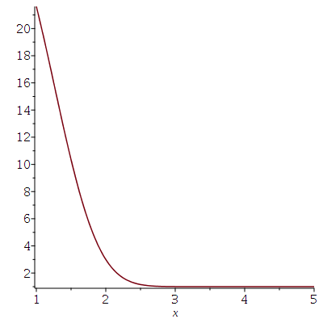
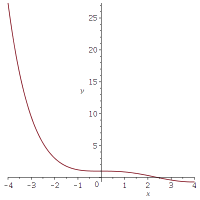
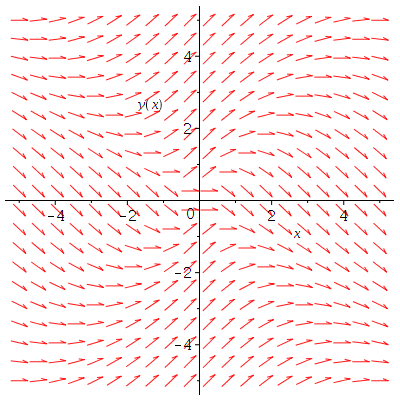
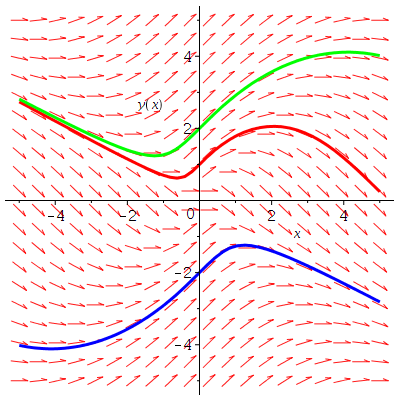
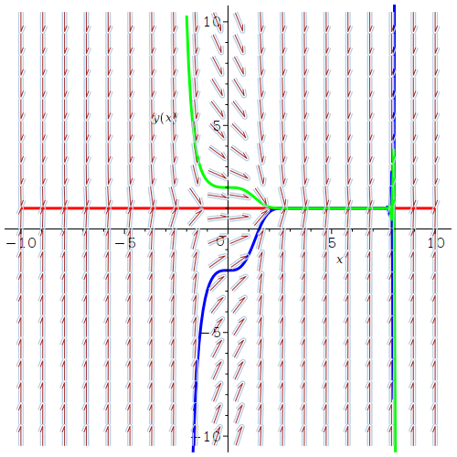
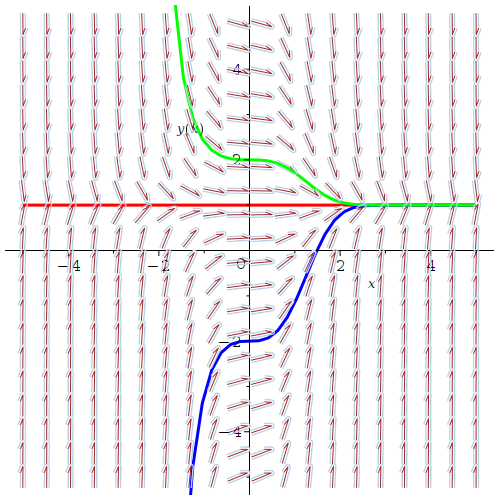

Ce document présente quelques unes des fonctions de Maple qui sont utilisées pour résoudre et tracer les solutions des équations différentielles ordinaires (EDO) d'ordre un.
Il y a plusieurs méthodes pour résoudre les EDO d'ordre un selon quelles sont séparables, homogènes, linéaires, etc. Maple peut résoudre presque tous ces genres d'EDO.
Pour trouver la solution générale de l'EDO d'ordre un suivante
> eq1:=diff(y(x),x)+y(x)=cos(x);\[ eq1 := \frac{\text{d}}{\text{d}x} y(x) + y(x) = \cos(x) \]
il suffit d'utiliser la fonction dsolve() de Maple.
> dsolve(eq1,y(x));\[ y(x) = \frac{\cos(x)}{2} + \frac{\sin(x)}{2} + e^{-x} \_C1 \]
Dans la solution donnée par Maple, le symbole _C1 désigne une constante arbitraire.
L'EDO homogène associée à l'EDO eq1 ci-dessus est
> eq2 := lhs(eq1) = 0;\[ eq2 := \frac{\text{d}}{\text{d}x} y(x) + y(x) = 0 \]
Sa solution générale est donnée par la commande suivante.
> dsolve(eq2,y(x));\[ y(x) = e^{-x} \_C1 \]
Le terme contenant le symbole _C1 dans la solution de l'EDO donnée par eq1 est la solution générale de l'EDO donnée par eq2. Les autres termes de la solution de l'EDO donnée par eq1 forme une solution particulière de l'EDO donnée par eq1.
Exemples: Voici quelques exemples supplémentaires.
Considérons l'EDO séparable suivante.
> eq3 := diff(y(x),x) = x^2*y(x)^2;\[ eq3 = \frac{\text{d}}{\text{d}x} y(x) = x^2 y(x)^2 \]
Sa solution est donnée par la commande suivante.
> dsolve(eq3,y(x));\[ y(x) = \frac{3}{-x^3 + 3\_C1} \]
Considérons l'EDO homogène suivante.
> eq4:=(x^2+y(x)^2)*diff(y(x),x)+ x^2-y(x)^2= 0;\[ eq4 := (x^2+y(x)^2) \frac{\text{d}}{\text{d}x} y(x) + x^2 - y(x)^2 = 0 \]
Sa solution est donnée
par la commande suivante.
> dsolve(eq4,y(x));\[ y(x) = RootOf \left(-\int^z \frac{1+\_a^2}{\_a^3 -\_a^2+\_a+1} \text{d}\_a + \ln(x) + \_C1\right) x \]
Maple semble avoir des problèmes à résoudre cette EDO. Nous y reviendrons plus tard.
Finalement, considérons l'EDO linéaire suivante.
> eq5:= diff(y(x),x) + x^2*y(x) = x^2;\[ eq5 := \frac{\text{d}}{\text{d}x} y(x) + x^2 y(x) = x^2 \]
Sa solution est donnée par la commande suivante.
> dsolve(eq5,y(x));\[ y(x) = 1+ e^{-\frac{x^3}{3}} \_C1 \]
Nous considérons l'EDO linéaire d'ordre un \(\displaystyle y'(x) + x^2 y(x) = x^2\) et utilisons la fonction dsolve() pour résoudre cette EDO avec la condition initiale \(y(2)=3\). La variable eq5 définie ci-dessus contient la version Maple de cette EDO.
> sol1:=dsolve({eq5,y(2)=3},y(x));
\[
sol1 := y(x) = 1+ \frac{2 e^{-\frac{x^3}{3}}}{e^{-\frac{8}{3}}}
\]
Nous pouvons utiliser la fonction plot() pour tracer le graphe de cette solution. Nous récupérons la formule pour cette solution particulière à l'aide de la commande rhs(sol1) avant de faire appel à la fonction plot().
> plot(rhs(sol1),x=1..5);

Note: Si nous devons évaluer la solution d'un problème aux valeurs initiales à plusieurs points, alors il est préférable d'utiliser une procédure pour définir la solution. Par exemple, nous pouvons évaluer la solution donnée par sol1 à \(x = 1.5\) de la façon suivante.
> yp:= s -> subs( x=s,rhs(sol1)); evalf(yp(1.5));\[ \begin{split} &yp := s \mapsto subs( x=s, rhs(sol1)) \\ & \qquad 10.34474214 \end{split} \]
Lorsque nous parlons de la solution numérique d'une EDO, nous parlons naturellement d'une approximation de la vrai solution de l'EDO.
Puisque qu'il ne semble pas être possible de trouver une forme simple de la solution de l'EDO homogène donnée par eq4, nous cherchons une solution numérique de cette EDO avec la condition initiale \(y(0)=2\).
> yp := dsolve({eq4,y(0)=2},y(x),type=numeric);
\[
yp:=proc(x\_rkf45) ... end proc
\]
Par défaut, la méthode numérique utilisé pour résoudre un problème aux valeurs initiales est la méthode de Runge-Kutta-Fehlberg d'ordre 4 avec une erreur d'ordre 5. Nous utilisons la fonction odeplot de Maple pour tracer le graphe de la solution ci-dessus.
> with(plots): odeplot(yp,-4..4);

Puisqu'il n'est pas toujours possible d'obtenir une forme simple pour la solution d'une EDO, tracer le graphe de la solution numérique d'une problème aux valeurs initiales est souvent une bonne alternative. Pour obtenir un aperçu qualitatif des graphes des solutions d'une EDO, nous pouvons tracer un champ de pentes de l'EDO.
Considérons l'EDO d'ordre un \(y'(x) = f(x,y(x))\). Le côté droit \(f(x,y(x))\) est la pente de la solution \(y\) à chaque point \((x,y(x))\); un point sur le graphe de la solution \(y\). Pour tracer un champ de pentes pour une EDO, nous choisissons plusieurs points \((x,y)\) également distancés du plan et traçons une flèche de pente \(f(x,y)\) à partir de chacun de ces points. Maple a une jolie fonction pour générer les champs de pentes d'une EDO.
Considérons notre fameuse EDO homogène d'ordre un donnée par eq4. Un champ de pentes pour cette EDO est tracé ci-dessous.
> with(DEtools): DEplot(eq4,y(x),x=-5..5,y=-5..5, arrows=small);

Nous pouvons aussi tracer les graphes des solutions associées à des conditions initiales sur le champ de pentes ci-dessus. Dans la figure ci-dessous, nous avons inclus les graphes des solutions particulières associées aux conditions initiales \(y(0)=1\), \(y(0)=-2\) and \(y(0)=2\).
> DEplot(eq4,y(x),x=-5..5,y=-5..5, [[y(0)=1],[y(0)=-2],[y(0)=2]],linecolor=[red,blue,green], arrows=small);

Il est possible de choisir une méthode numérique différent, un pas différent, une erreur de tolérance différente, ... pour les fonctions dsolve() et DEplot().
Exemple: Considérons l'EDO définie de la façon suivante dans Maple.
> eq5 := diff(y(x),x)+x^2*y(x)=x^2;\[ eq5 := \frac{\text{d}}{\text{d} x} \,y(x) + x^{2}\,y(x)=x^{2} \]
Nous avons déjà résolu cette EDO dans un exemple précédent. Nous pouvons tracer un champ de pentes de cet EDO qui contient les graphes des solutions particulières associées aux conditions initiales \(y(0)=1\), \(y(0)=-2\) et \(y(0)=2\). Nous utilisons la simple méthode de Euler avec un pas de \(0.1\).
> DEplot(eq5,y(x),x=-10..10,y=-10..10,[[y(0)=1],[y(0)=-2],[y(0)=2]],linecolor=[red,blue,green], method=classical[foreuler],stepsize=.1);

Il semble y avoir un problème avec les graphes des solutions particulières associées aux conditions initiales \(y(0)=-2\) et \(y(0)=2\) lorsque \(x\) est plus grand que \(8\). Les graphes de ses solutions ne sont pas tangents au champ de pentes comme cela devrait être le cas.
Cet exemple illustre le danger associé à l'utilisation d'une méthode d'intégration numérique. Pour obtenir des résultats qui sont réalistes et plus précis, il est souvent nécessaire de choisir un pas différent ou une méthode numérique plus appropriée. Il est donc important d'avoir une connaissance théorique et qualitative de l'EDO avant d'entreprendre d'énormes calculs. Le problème dans le cas présent provient de la méthode d'Euler qui n'est pas une méthode d'intégration très précise et du pas qui est trop grand. Si nous utilisons la méthode numérique que DEplot() utilise par défaut (i.e. la méthode de Runge-Kutta-Fehlberg), nous obtenons alors le résultat suivant.
> DEplot(eq5,y(x),x=-5..5,y=-5..5,[[y(0)=1],[y(0)=-2],[y(0)=2]], linecolor=[red,blue,green]);

Ce résultat est beaucoup mieux.